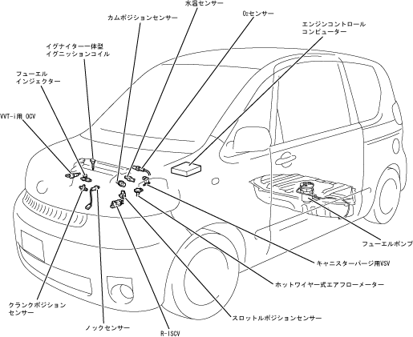

| エンジンコントロールシステム全般 |
| ● |
燃料噴射制御（EFI）・点火時期制御（ESA）・アイドル回転数制御（ISC）・VVT-i制御などを総合的に高精度で制御するTCCS（TOYOTA
Computer Controlled System：エンジン総合制御システム）を採用し,高性能・高出力化,低燃費およびエミッション性能の向上をはかりました。
|
| ● |
運転状態によりインテークカムシャフトの位相を切り換えるVVT-iを採用しました。これにより燃費・出力・トルク特性およびエミッション性能など，総合性能の向上をはかりました。
|
| ● |
ダイアグノーシス,およびフェイルセーフ機能を設けサービス性と安全性に配慮しました。
|
|  |
 エンジンコントロールシステム図 エンジンコントロールシステム図
|
| エンジンコントロールブロック図
|

| 制御一覧
|
| センサー一覧
|
| アクチュエーター一覧
|